Freejump · April 2026
Build an airbag integrating electronic fall detection and a pyrotechnic triggering system. Fast, reliable, ergonomic protection with no mechanical tether to the saddle.
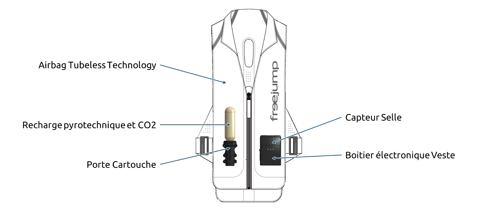
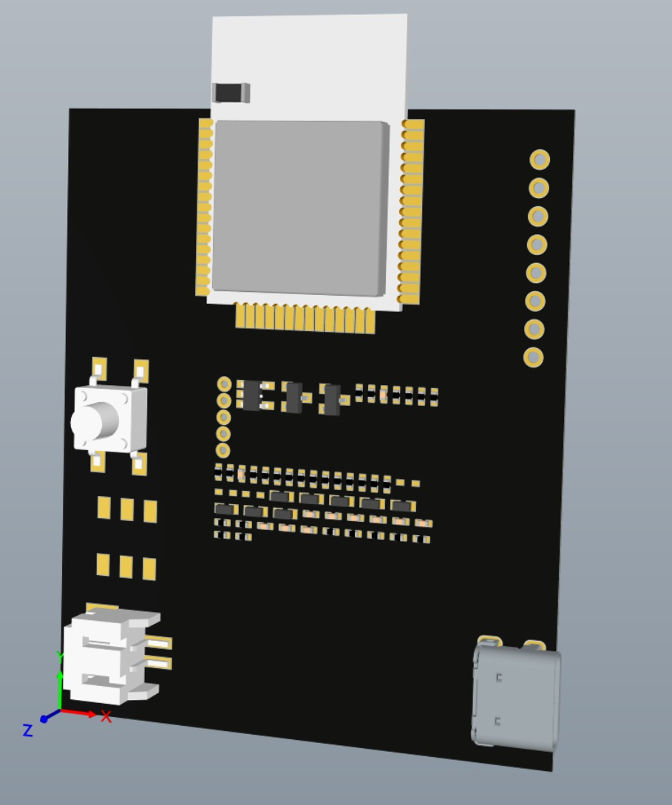
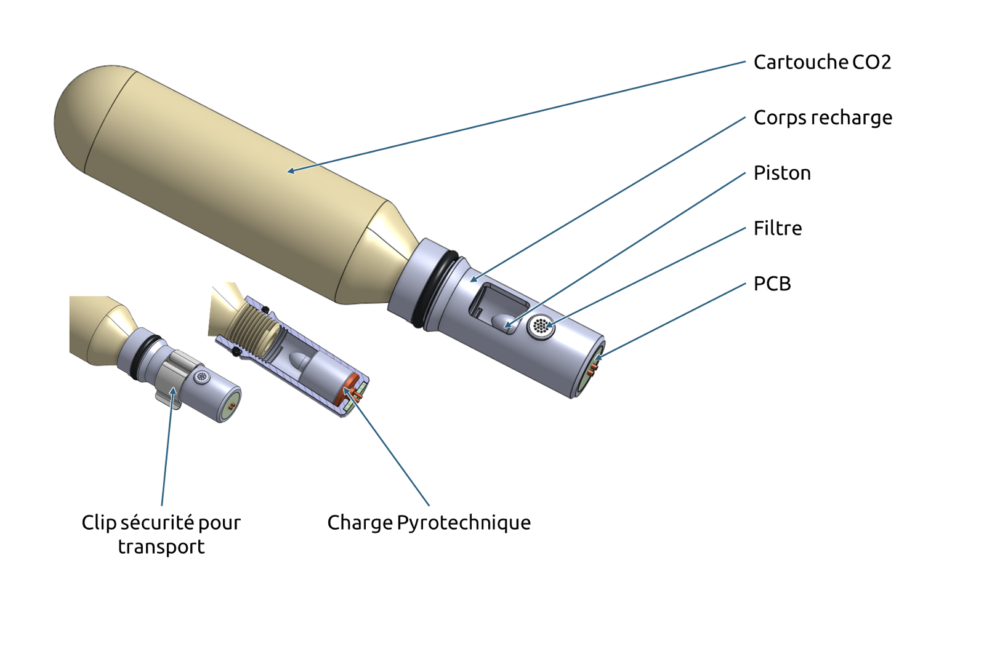
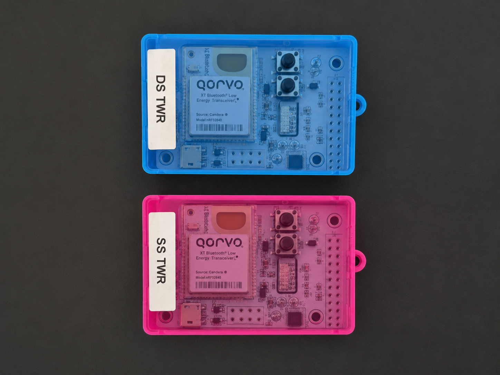
Real-time distance between bike and vest
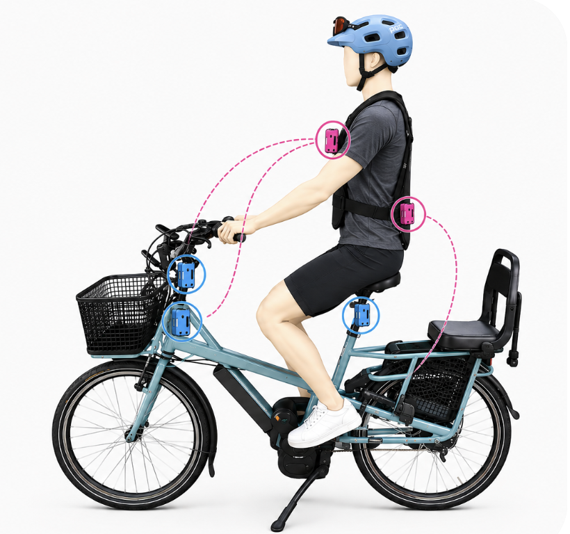
Why test multiple configurations?
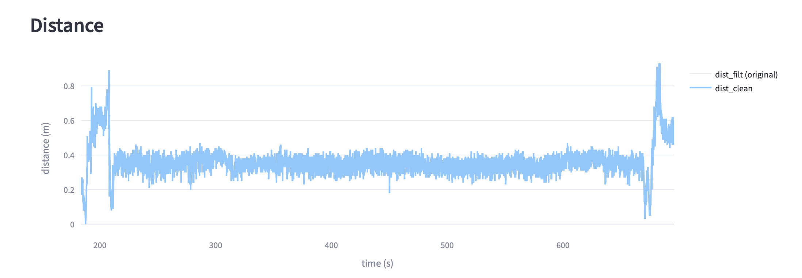
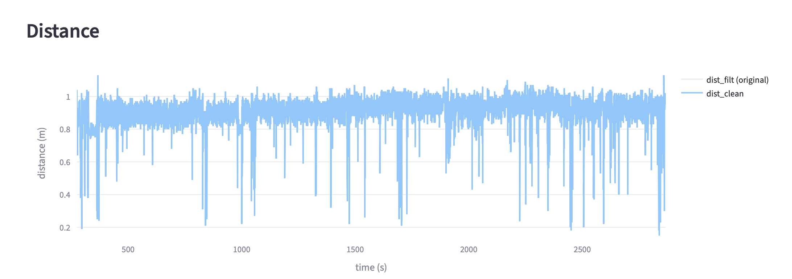
Find the best compromise across:
For each configuration:
Constants across all runs:
Config
Benefit
Expected limits
Config
Benefit
Expected limits
Two channels compared:
Channel can affect sensitivity to:
Test matrix
| Mode | Ch 5 | Ch 9 |
|---|---|---|
| Max Speed | Test A | Test B |
| Outdoor Robust | Test C | Test D |
Positions coded in app:
Impact measured on:
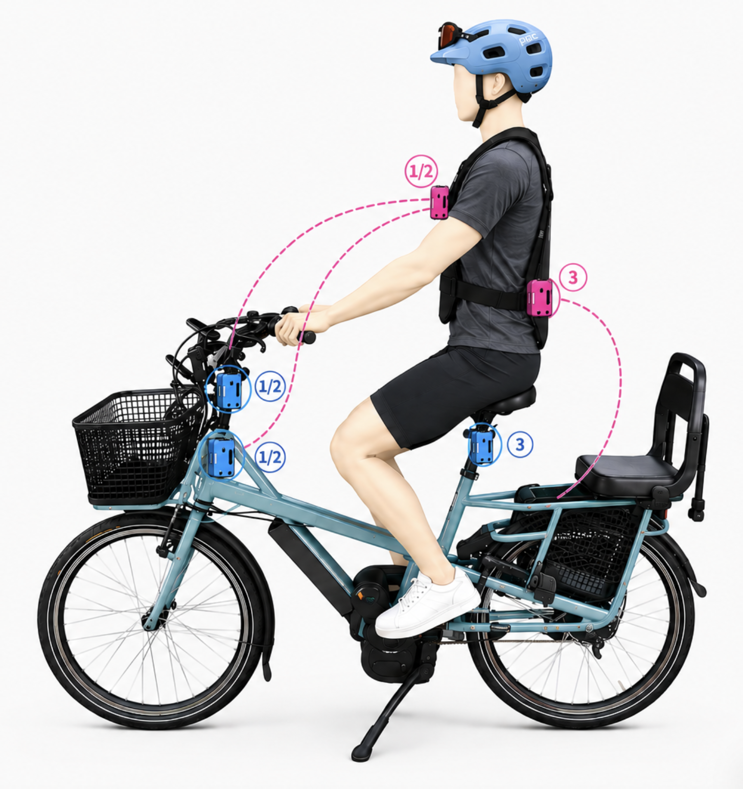
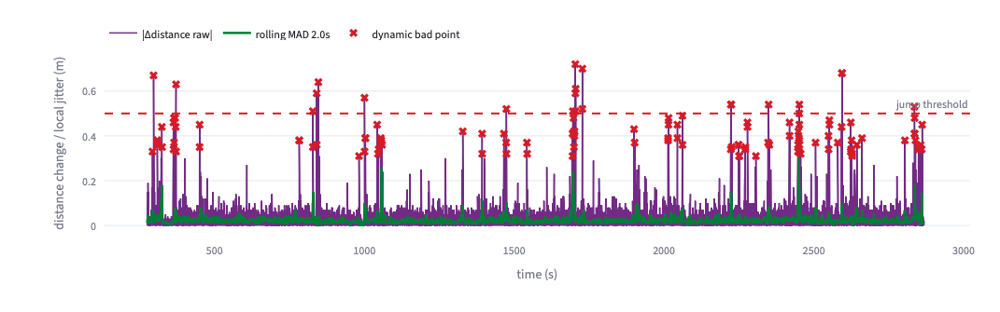
Based on the updated exported comparison table: 20 usable runs, 1 very short run excluded, mixed positions.
| Configuration | Data | Avg score | Dynamic stability | Takeaway |
|---|---|---|---|---|
| Max Speed · Ch 9 FAST_DISTANCE_ONLY |
2 runs positions 2/2, 1/1 ~57 Hz |
9.09/10 best single run: 9.33 |
Instability 15.2/100 spikes 1.56% · Δdist p95 9.5 cm |
Only mode near the 50 Hz target, but spike rate is too high; very clean in 2/2, noisy in 1/1. |
| Outdoor Robust · Ch 9 ROBUST_DETECTION |
4 runs positions 2/2, −3/−3, 1/1, 3/3 ~30.9 Hz |
8.69/10 best single run: 8.87 |
Instability 6.4/100 spikes 0.16% · Δdist p95 4.8 cm |
Best Δdist p95 average; good robust candidate, but acquisition rate remains below the 50 Hz target. |
| Outdoor Robust · Ch 5 ROBUST_DETECTION |
14 runs all tested positions ~30.9 Hz |
8.58/10 best single run: 8.87 |
Instability 6.3/100 spikes 0.11% · Δdist p95 8.0 cm |
Largest evidence base; reliable robust baseline, but weaker positions pull the average down. |
| Max Speed · Ch 5 planned matrix cell |
No run not in summary CSV |
— | — | Cannot rank yet; should be added only if we want a complete mode × channel matrix. |
Same summary CSV, grouped by bike / vest position. This suggests position may dominate the mode/channel effect.
| Bike / Vest | Runs | Best config | Mean score | Instability | Interpretation |
|---|---|---|---|---|---|
| 2 / 2 | 4 | Max Speed · Ch 9 best 9.33/10 |
8.96 | 1.7/100 spikes 0.004% |
Best observed position; closest to the working target. |
| −1 / −1 | 2 | Outdoor Robust · Ch 5 | 8.83 | 0.8/100 0 spikes |
Very clean, but only tested with robust Ch 5. |
| 3 / 3 | 3 | Outdoor Robust · Ch 5 | 8.70 | 5.3/100 spikes 0.17% |
Good candidate; long Ch 9 run adds confidence but also some spikes. |
| 1 / 1 | 6 | Outdoor Robust · Ch 5 | 8.61 | 9.7/100 spikes 0.45% |
Mixed: robust can be clean, but Max Speed is noisy here. |
| −3 / −3 | 3 | Outdoor Robust · Ch 9 | 8.47 | 10.3/100 spikes 0.16% |
Moderate degradation; retest Ch 5 vs Ch 9 under same ride. |
| 3 / −3 | 2 | Outdoor Robust · Ch 5 | 8.16 | 15.7/100 spikes 0.51% |
Weakest observed position; likely a poor mounting geometry. |
Max Speed · Ch 9
Outdoor Robust
Position effect
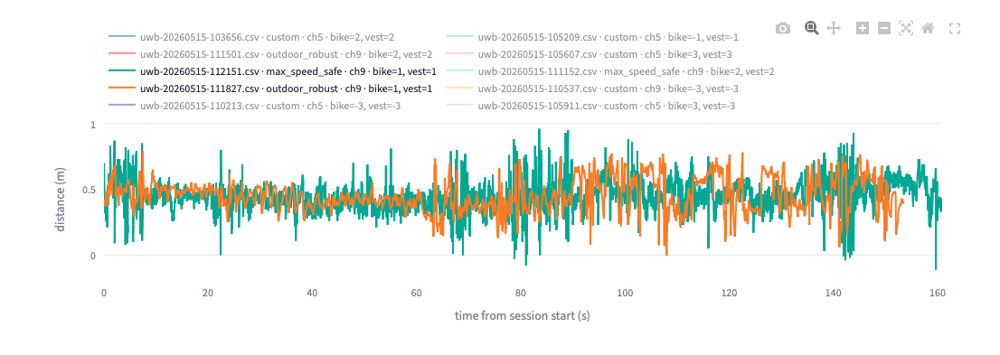
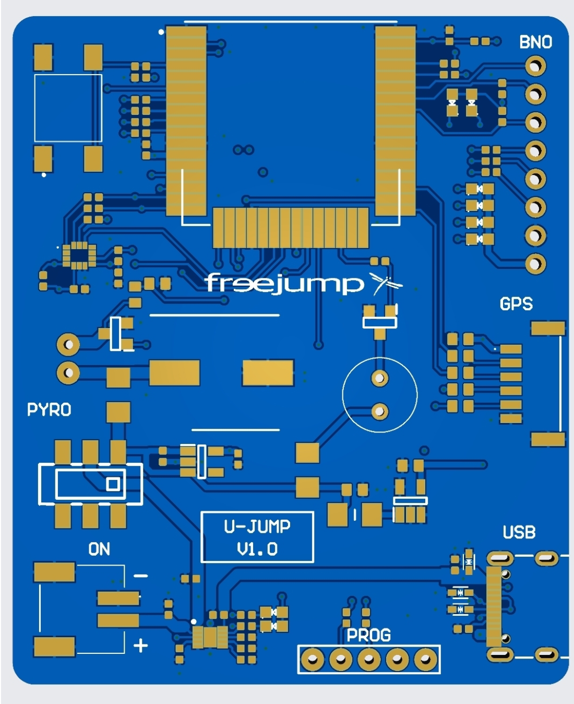
Any questions?